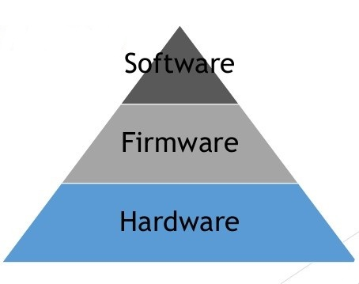

If you want a computer to be perfectly secure, you could fill it with concrete and dump it in the ocean. This would protect any information on the computer from inappropriate use. Unfortunately, the computer would be completely unusable. (So you probably don't want to do that!) Since you want to both use your computer and keep it safe, you should practice good computer security. Computer security allows you to use the computer while keeping it safe from other people and threats.
Computer security can be defined as controls that are put in place to provide confidentiality, integrity, and availability (CIA) for all components of computer systems, within all three layers (Software, Frirmware and Hardware)
Confidentiality - Protects data from those not meant to see it.
Integrity - Ensures data is what it is meant to be.
Availability - Ensures data accsesbility from any location at any time.

----> Software is the programming that offers services to the user and administrator. The operating system, word processor, computer games, and Internet browser are all examples of software commonly found on a computer.
----> Firmware is the permanent software that runs the processes of the computer and is mostly invisible to the user, like the start-up functions that make elements of the hardware work together.
----> Hardware is the physical part of the computer, like the system memory and disk drive.